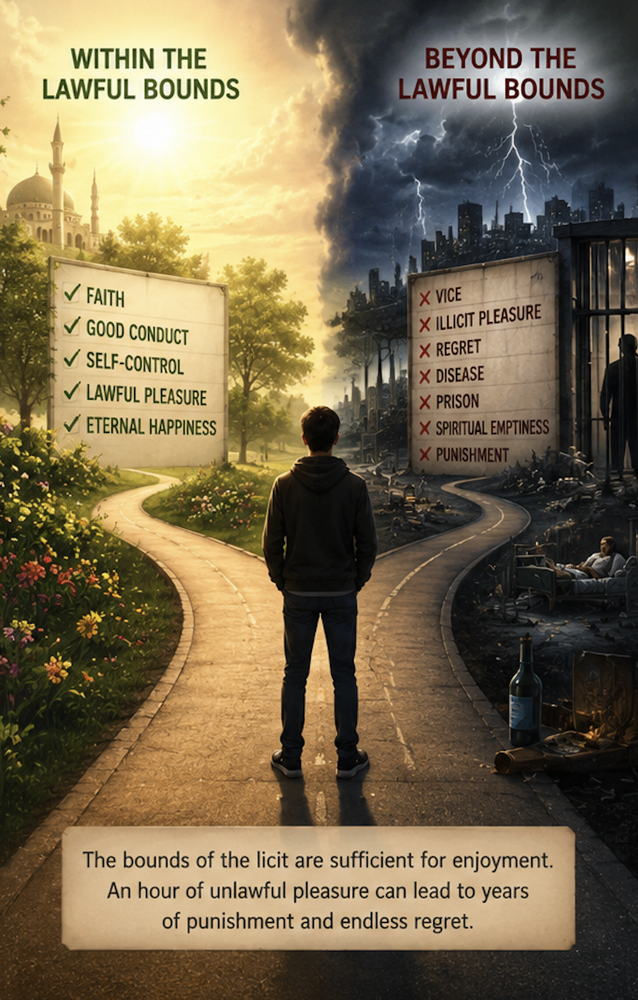

Lawful Joy#
The Joy of Living Within the Lawful
Reading Objectives
By the end of this text, students will be able to:
Explain why youth is a temporary but valuable stage of life.
Describe the benefits of living within the lawful bounds set by God.
Compare the consequences of lawful and unlawful pleasures.
Identify the lasting effects of choices made during youth.
Reflect on how to use youth as a means of preparing for the Hereafter.
Background#
{kind=link}
In the Fifth Topic of the Eleventh Ray, Bediüzzaman Said Nursi reflects on one of life’s greatest blessings: youth. He reminds readers that youth is temporary and will inevitably give way to old age and death.
Rather than seeing youth merely as a time for pleasure, he presents it as a Divine trust to be used wisely. Drawing on the teachings of the Qur’an and the revealed scriptures, he explains that true happiness is found within the lawful (licit) bounds established by God. While unlawful pleasures may appear attractive, they often bring lasting regret and suffering, whereas lawful living leads to peace, gratitude, and eternal reward.
Main Passage#
{kind=link}

As is described in A Guide For Youth, there is no doubt that youth will depart; it will change into old age and death as certainly as the summer gives its place to autumn and winter, and the day changes into evening and night.
All the revealed scriptures give the good news that if fleeting, transient youth is spent on good works, in chastity and within the bounds of good conduct, it will gain for the person immortalyouth.
If, on the other hand, youth is spent on vice, just as murder resulting from a minute’s anger leads to millions of minutes of imprisonment, so quite apart from being called to account in the hereafter, and the torments of the grave, and the regrets arising from their passing, and sins, and the penalties suffered in this world, the unlawful pleasures of youth contain more pain than pleasure; every youth with sense will corroborate this from his own experience.
For example, the pains of jealousy, separation, and unreciprocated love transform the partial pleasure to be found in illicit love into poisonous honey.
If you want to know how they end up in hospitals due to illnesses resulting from their misspent youth, and in prison due to their excesses, and in bars and dens of vice and the graveyard due to the distress arising from their unnourished hearts and spirits not performing their right functions, go and ask at the hospitals, prisons, bars, and graveyards.
More than anything, you will hear the weeping and sighs of regret at the blows youths have received as the penalty for abusing their youth, and their excesses, and illicit pleasures.
Foremost the Qur’an, with numerous of its verses, and all the revealed scriptures and books, give the glad tidings that if spent within the bounds of moderation, youth is an agreeable Divine bounty and sweet, powerful means to good works, which yields the result of shining, immortal youth in the hereafter.
Since the reality is this, and since the bounds of the licit are sufficient for enjoyment, and since an hour of unlawful pleasure leads sometimes to a punishment of one, or ten, years’ imprisonment; surely it is absolutely necessary to spend the sweet bounty of youth chastely, on the straight path, as thanks for the bounty.
Summary#
{kind=link}
Bediüzzaman teaches that youth is a precious but temporary blessing. When spent in faith, purity, and good character, it becomes a source of everlasting happiness in the Hereafter.
Although forbidden pleasures may offer temporary excitement, they often result in emotional pain, physical harm, regret, and accountability before God. In contrast, the lawful things that God has permitted are sufficient for genuine enjoyment and lead to a life of gratitude, self-respect, and lasting peace.
He concludes that the best way to thank God for the gift of youth is to live within the lawful bounds He has established.
Reading Comprehension Questions#

Why does Bediüzzaman say that youth is temporary?
What do the revealed scriptures promise to those who spend their youth righteously?
What comparison does he make between youth and the changing seasons?
What consequences can result from abusing one’s youth?
Why does he compare unlawful pleasure to poisonous honey?
Which places does he mention as evidence of the consequences of misused youth?
What does he say the Qur’an teaches about youth?
Why are the lawful bounds sufficient for enjoyment?
What can a single hour of unlawful pleasure sometimes lead to?
According to the passage, how should young people show gratitude for the blessing of youth?
Critical Thinking Questions#
{kind=link}
Why do many young people feel that youth will last forever?
How do today’s media and culture influence the way young people use their youth?
What does it mean to view youth as a trust from God?
Why are short-term pleasures often more attractive than long-term rewards?
How can self-discipline protect a person’s future?
What kinds of regrets might result from poor decisions made during youth? How can lawful enjoyment lead to a happier life? Why is gratitude an important part of using blessings wisely? How would your daily choices change if you viewed youth as preparation for eternity? What practical steps can young people take to benefit from their youth today?
Glossary#

Word |
Definition |
|---|---|
Bounty |
A generous gift or blessing from God. |
Chastity |
Living with purity and self-control according to moral and religious principles. |
Conduct |
A person’s behavior or actions. |
Corroborate |
To confirm or support with evidence or experience. |
Dens |
Places associated with immoral or harmful activities. |
Fleeting |
Lasting for only a short time. |
Glad Tidings |
Good news or joyful promises from God. |
Hereafter |
Life after death. |
Illicit |
Forbidden by law or religion. |
Immortal |
Living forever; never ending. |
Imprisonment |
The state of being confined in prison. |
Licit |
Allowed or permitted according to law or religion. |
Moderation |
Avoiding excess; keeping within proper limits. |
Tidings |
News or information, especially good or important news. |
Torrents |
Severe or overwhelming experiences; here, intense suffering or punishment. |
Transient |
Temporary; lasting only a short time. |
Unnourished |
Not properly cared for or developed; lacking what is needed to grow healthy. |
Unreciprocated |
Not returned or shared by another person; especially referring to love or affection. |
Vice |
Immoral or sinful behavior. |
Weeping |
Crying with tears because of sadness or pain. |